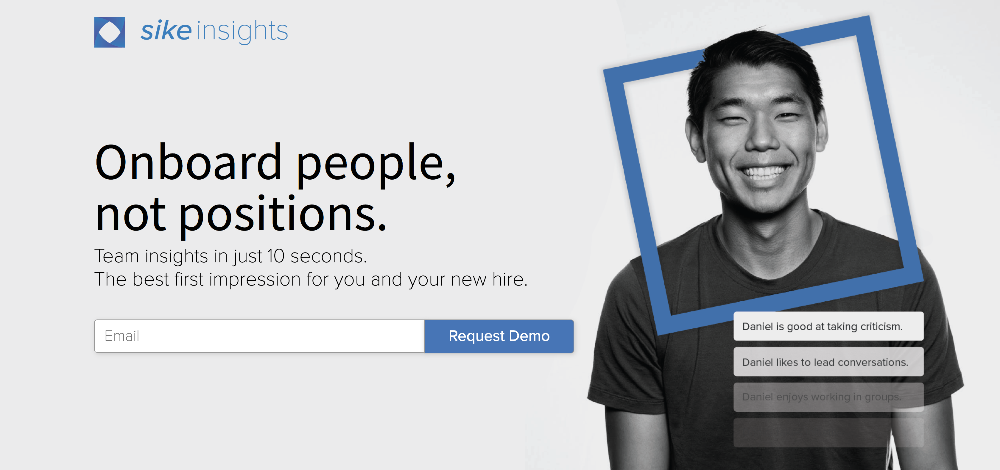

Sike Insights
Worked on product and the entirety of front-end for this KP-backed startup.
https://onboarding.sikeinsights.com
• Worked with tight deadlines to deliver onboarding platform’s front-end to pilot clients
• Spearheaded efforts to break into internal management industry; iterated with feedback to design the best version of both the platform and the landing page
• Combines psychology and machine learning to make predictions on a new hire’s personality based on sent emails
Sike Insights combines psychology and machine learning to predict one’s positive and negative personality traits, tendencies, and quirks in the workplace to provide for better insights so managers can better manage their teams. Our insights can, for example, tell a manager how well someone takes criticism, or whether they prefer a loose managerial style or one that’s more hands-on.
As the design and front-end lead, I defined the company brand and developed the entirety of the front-end for the company, including that of an onboarding platform aimed at using personality to ease the transition for new hires. If you want to learn more about my design work, click here.
First Iteration and Idea
The first iteration was an abstract implementation of the back-end technology that we had. We were taking data the user inputs from their email text and extracting that to determine personality traits that connects to an overall report. We also made personality-based movie recommendations for a hackathon we submitted the project for.
Obviously, this was an incredibly early-stage iteration, and we knew that our technology could—and should—be applied to a lot more than just a report. Over time, we decided that the best application would be for new hires, or for onboarding. Thus, we began the product cycle.
Defining Vision and Product
This began as soon as we finished up the first iteration. We made many design decisions—all of which you can read about by clicking here—and as soon as we had a clear idea of what we wanted the product to be, development on a minimum viable product began.
First order of business was building out a landing page to refer clients to, so they could sign up for beta testing. Then, I built the app itself while marketing worked on landing clients concurrently, with the promise of a completed and well-researched onboarding platform. Then, based on user research and user feedback, we iterated.
We’re currently running pilots with a few very exciting companies, and are incredibly excited for what’s to come in the next year.
Landing Page
Building the landing page was more a practice in marketing, messaging, and design than it was a test of programming prowess (at the end of the day, it’s just HTML and CSS). Therefore, to learn more about the lengthy process I took to ideate, design, and iterate, please click here.
Onboarding
Based on the product brainstorming (pictured earlier), we decided on a list of features and a todo list, and once again, I worked alongside marketing to build and iterate on an onboarding application.
The front end I singlehandedly put together using React. It was a serious test in front-end ability, as a lot of the challenges I faced were incredibly challenging. I put at least 60 hours in about a week putting the application together, because deadlines were tight to present the application to potential pilot clients.
One of the biggest challenges was making everything flow smoothly. I was determined to fully carry out my own design vision, and thus I had to go to a great extent in order to make every animation flow smoothly, and to make everything come together in a cohesive way.
Another one of the biggest challenges was connecting our platform to the back-end, which was a Flask server with a NoSQL database. I ended up working with the back-end team by collaborating with them to send a receive POST requests throughout the user onboarding process so that my front-end could talk to the flask server and grab from the machine learning technology that we’ve developed.

Conclusion
Working on Sike was an incredible exercise in product, in collaboration, and in React and general front-end. Not only did I get to think about product and design, I got to implement these myself, and fully carry out my full vision.
<< Go Back